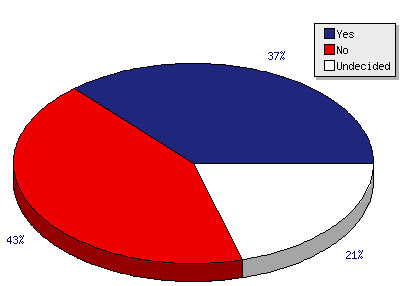

So What's Our Deal?
+ Undecided American , is merely a portal page to help aid the confused voter in narrowing down the information about the candidates and clearing up on the positions despite the 24/7 media frenzy that stir things up. UA believes that Americans as citizens should not neglect they're right to vote, cause of uncertainty and or scepticism. UA tries to simplify and clarify so that you the voter know exactly what the value of your vote is and the magnitude of it's change.
- Pie Chart Data
http://www.firstnews.co.uk/polls/do-you-believe-plants-can-talk-i943
 |